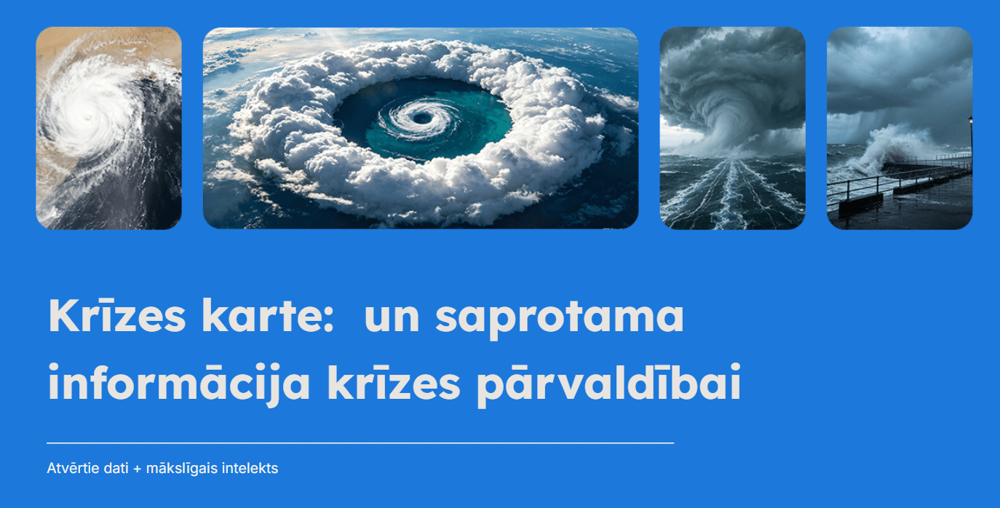
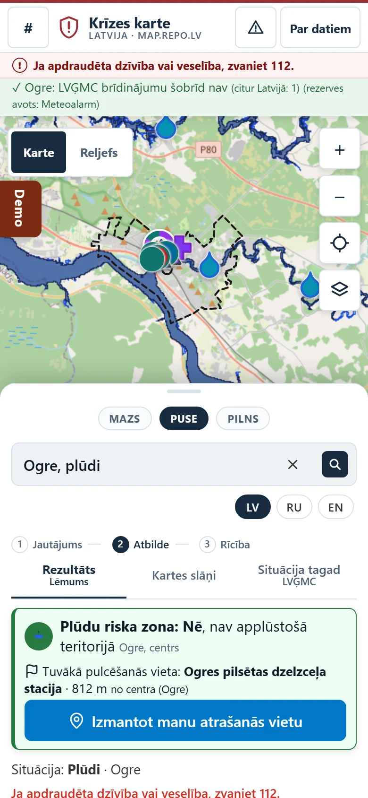
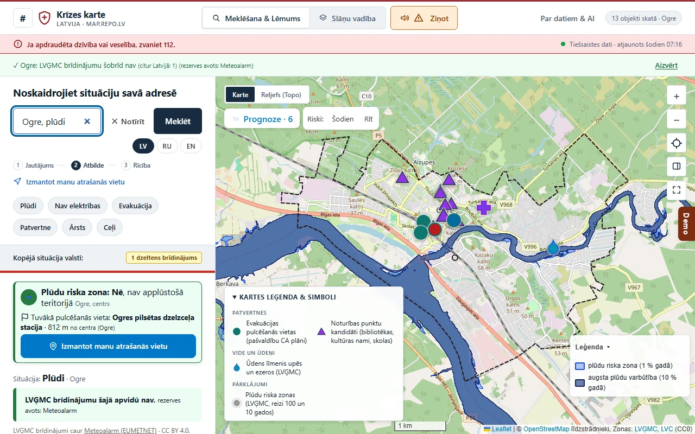
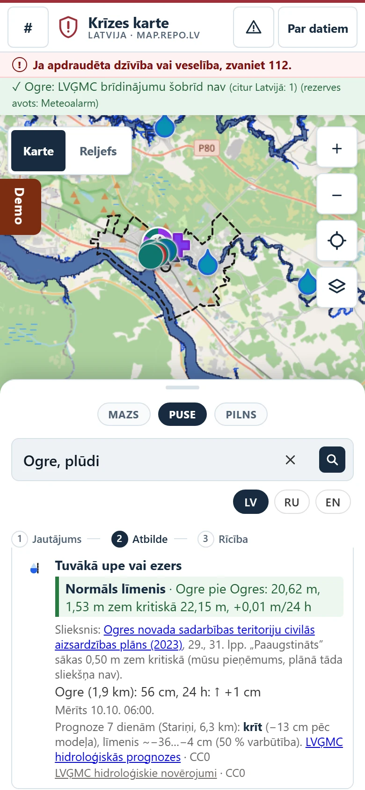
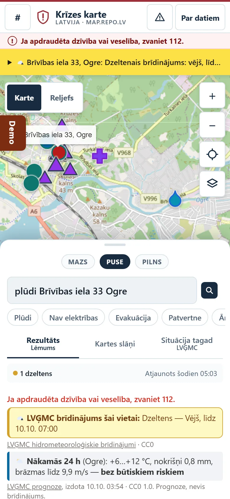
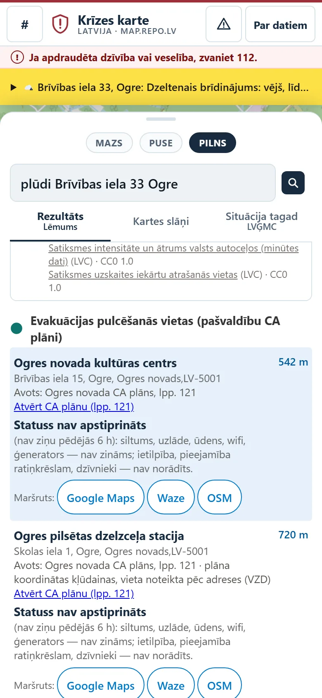
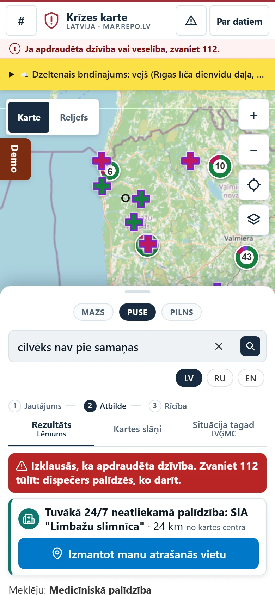
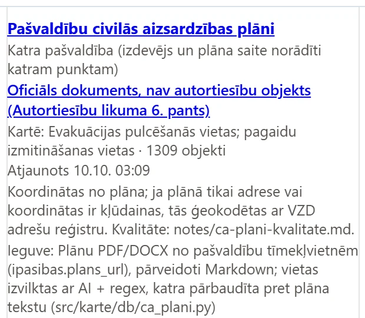
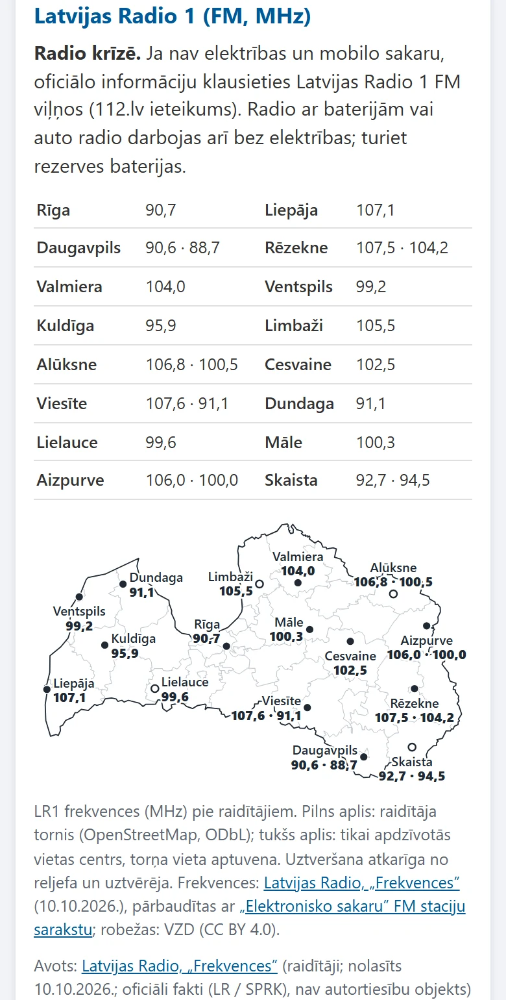

0:00–0:30
Krīzes karte
Viena rinda. Viens lēmums.
Atvērtie dati + mākslīgais intelekts
map.repo.lv
VARAM / LATA „AI atvērto datu” hakatons 2026 · krīžu vadības virziens

Prototips: https://map.repo.lv
Teikt (0:00–0:30): Augusta vētrā bez strāvas palika ap 260 000 lietotāju. Cilvēkam telefonā ir divi jautājumi: kur man iet, un vai mana māja ir bīstamā vietā. Atbilde eksistē — pašvaldības civilās aizsardzības plānā. Bet to neviens neatrada.
0:30–1:00
Atbilde ir. Tā ir 200 lappušu PDF.
~260 000
bez elektrības vētrā 22.–23.08.2026 (LSM; ST: ~245 000 vienlaikus)
42
pašvaldību CA plāni, katrs 200–800 lpp.
1 791
karte plānos — kā attēls, nevis dati
10
pašvaldības pulcēšanās vietas nepublicē
Krīzē cilvēks nelasa PDF. Viņš uzraksta vienu rindu telefonā.

„Ogre, plūdi” — viena rinda pietiek
Teikt (0:30–1:00): Informācija eksistē, bet ne tādā formā, kas palīdz krīzes brīdī, telefonā ar 5 % baterijas. 42 plāni, katrs savā formātā, kartes kā bildes. Krīzē neviens nelasa PDF — cilvēks uzraksta vienu rindu. Mūsu atbilde ir nākamajā slaidā.
1:00–1:40 · demo
Demo: viena rinda → viena kartīte ar lēmumu
„Ogre, plūdi”
LVĢMC brīdinājums šai vietai · prognoze 24 h
Lēmums: plūdu zona jā / nē
Upe: 1,53 m zem kritiskā (CA plāns, 29. lpp.)
Tuvākās vietas + maršruts · padoms, kas notiks tālāk
Katrai rindai — avots un licence.

Dzīvais demo; rezerve — šis ekrānšāviņš
Teikt (1:00–1:40, dzīvais demo): Ierakstīt „Ogre, plūdi”. Rādīt: brīdinājums šai vietai → nākamās 24 h → plūdu riska zona → upes līmenis pret CA plāna kritisko līmeni ar lappusi → padoms. Pirms uzstāšanās „uzsildīt” vaicājumu — LVĢMC plūdu WMS ir lēns, ekrānšāviņa brīdī plūdu zonas rinda vēl lādējās.
1:40–2:10
Upe pret plāna slieksni — ar lappusi
LVĢMC dzīvais līmenis: 1,53 m zem kritiskā
Kritiskais līmenis — no Ogres CA plāna, 29. lappuses
Katrai rindai kartītē — avots, licence un, ja dati no plāna, lappuse un citāts
Iedzīvotājs var pārbaudīt katru skaitli oriģinālā.

Ogres upes līmenis pret CA plāna kritisko līmeni
Teikt (1:40–2:10): Šis ir tas pats 200 lappušu plāns — tikai skaitlis, kas cilvēkam svarīgs: cik tālu no kritiskā. Katru vērtību var pārbaudīt: lappuse un citāts no oriģinālā plāna, līmenis — no LVĢMC reāllaika datiem (CC0).
2:10–2:45
Ar adresi: lēmums pie Jūsu durvīm
„plūdi Brīvības iela 33 Ogre”
Adresi atrod VZD reģistrs — neprasām neko, ko valsts jau zina
Pulcēšanās vieta: 542 m · saite uz CA plāna 121. lpp.
Maršruts vienā pieskārienā
3 soļi: vieta → vajadzība → rezultāts. Kartīte pati ir kopsavilkums.


Adrese → tuvākā pulcēšanās vieta → maršruts
Teikt (2:10–2:45): Ja pievieno adresi, lēmums ir par manu māju: vai tā plūdu zonā, kur tuvākā pulcēšanās vieta un kā tur nokļūt. Pievērsiet uzmanību: „Atvērt CA plānu, 121. lpp.” — katru vietu var pārbaudīt oriģinālā. Otrajai vietai rakstīts „plāna koordinātas kļūdainas, vieta noteikta pēc adreses (VZD)” — par to pēc minūtes.
2:45–3:05
Dzīvība — pirmajā vietā
„cilvēks nav pie samaņas”
Kartītes augšā: Zvaniet 112 tūlīt.
Bez zvana pogām — pasakām skaidri, ko darīt.
Meklētājs to saprot arī krieviski un angliski.

Dzīvības draudi → sarkana rinda uzreiz
Teikt (2:45–3:05): Ja teksts izklausās pēc dzīvības draudiem, kartītes augšā ir sarkana rinda „Zvaniet 112 tūlīt”. Mēs nerādām pogu — mēs pasakām skaidri. Tas darbojas visās trijās valodās.
3:05–3:45
MI nav čatbots. MI ir auditors.
42 → 1 355
plāni → 776 pulcēšanās + 579 izmitināšanas vietas; katrai lappuse, citāts, VZD pārbaude
41
koordinātu kļūda oficiālos plānos
96,2 %
meklētājs: 129 scenāriji LV/RU/EN, 612 testi
Piemērs: Jūrmalas pulcēšanās vieta Nr. 10 plānā ir Lietuvā — viena cipara kļūda, ~100 km (85. lpp.).
Meklētājs: noteikumi, nevis ģenerēts teksts. MI aģenti izlasīja plānus, uzrakstīja atslēgvārdus un testus — atbildi dod pārbaudāmi noteikumi.
Ātri, vienādi visiem, bez API izmaksām, arī bez interneta. LLM krīzē var izdomāt adresi — mūsējais nevar. Kvalitātes saraksts: notes/ca-plani-kvalitate.md
Teikt (3:05–3:45): MI šeit nav čatbots — tas ir auditors. MI aģenti izlasīja visus 42 plānus un izvilka 776 pulcēšanās un 579 izmitināšanas vietas; katrai — lappuse un burtisks citāts, ko skripts pārbauda pret plāna tekstu, un adrese pret VZD reģistru. Tā atradām 41 koordinātu kļūdu oficiāli apstiprinātos plānos: Jūrmalas vieta Nr. 10 plānā ir Lietuvā — viena cipara kļūda, ~100 km. Meklētājs darbojas pēc noteikumiem pārlūkā: 129 scenāriji, 96,2 % uz 612 testa vaicājumiem (mērīts 10.10., src/meklesana/testi.py).
3:45–4:20
33 atvērto datu avoti — 21 299 punkti, licence katram
| Bloks | Punkti |
|---|
| Transports un evakuācija (11 960 pieturas) | 12 348 |
| Patvertnes un izmitināšana (778 + 776 + 579 + 1 172 kandidāti) | 3 259 |
| Veselība un sociālie (37 slimnīcas 24/7, 814 aptiekas) | 2 040 |
| Vide, ūdens, bīstamie objekti (1 117 ugunsdzēsības ūdens) | 1 866 |
| Infrastruktūra un ekonomika (802 bankomāti, 588 DUS) | 1 644 |
| Drošības dienesti (87 VUGD, 55 policija) | 142 |
LVĢMC (7) · IeM IC (4) · GTFS (3) · OSM (6 + fons) · VZD, VM, ZVA, LVC, LR1 — CC0 / CC BY. 2 bez licences atzīmētas ar ⚠: patvertnes (781), bankomāti (845, 111 kritiskie).

Avots un licence redzams arī katra punkta logā
Teikt (3:45–4:20): Katrs punkts kartē rāda savu avotu un licenci — „katra atvērto datu kopa ir pluss”. 33 avoti: LVĢMC 7, IeM IC 4, GTFS 3, OSM 6 + fons, pārējie pa vienam. Bez licences ir 112.lv patvertnes (781) un banku bankomāti (845, no tiem 111 kritiskie) — atklāti norādām ar ⚠ un aicinām publicēt. LR1 frekvences ir oficiāli fakti, nav autortiesību objekts. 2 simulētie prototipa slāņi netiek skaitīti un ir marķēti „SIMULĒTI”.
4:20–4:45
Strādā, kad kaut kas nestrādā
| Nav interneta | saglabātie dati; apkārtne pieejama offline |
| LVĢMC nedarbojas | Meteoalarm (EUMETNET) |
| Nav strāvas | LR1 radio karte — 16 raidītāji, frekvences pārbaudītas ar regulatora sarakstu |
| GPS liegts | adrese (VZD reģistrs) |
| Avots krīt | statuss.html — godīgi rāda, kurš nestrādā |
Telefonā bez strupceļiem: katrai kļūmei ir ceļš tālāk.

LR1 radio karti var izdrukāt un pielikt pie ledusskapja
Teikt (4:20–4:45): Krīzē kaut kas vienmēr nestrādā. Bez interneta lapa rāda pēdējos datus un kartītes; apkārtni var saglabāt iepriekš. Ja LVĢMC nav pieejams — Meteoalarm ar atsauci uz LVĢMC. Ja nav ne strāvas, ne sakaru — LR1 radio karte ar izdrukājamām frekvencēm. Statusa lapa godīgi rāda, kurš avots šobrīd nestrādā.
4:45–5:00
PDF → atbilde 30 sekundēs
Pašvaldībām: plāna kvalitātes pārskats katrā plāna atjaunošanā
Iedzīvotājiem: lietotnē „112 Latvija” un Latvija.gov.lv
Datu turētājiem: publicējiet 5 no 35 trūkstošajām kopām — patvertņu statuss, evakuācijas vietas, atslēgumi, sakari, LV-ALERT — un karte tās parādīs nākamajā dienā
Viena rinda. Viens lēmums. map.repo.lv
Paldies! Nofotografējiet QR kodu un pamēģiniet paši.
35 trūkstošās kopas: map.repo.lv/trukstosie.html
Teikt (4:45–5:00): Ko tas dod pirmdienas rītā. Pašvaldībai — sava plāna kļūdu un trūkumu sarakstu katrā atjaunošanā. Iedzīvotājam — vienu rindu un vienu atbildi; tā var dzīvot lietotnē „112 Latvija” vai Latvija.gov.lv. Datu turētājiem — sagatavoti lūgumi (notes/vestules.md): publicējiet, un karte to parādīs nākamajā dienā. Paldies. Šo slaidu atstāt jautājumu laikā.
Krīzes karte · map.repo.lv · 1 / 10 · ← → slaidi · N piezīmes · P drukāšana / PDF